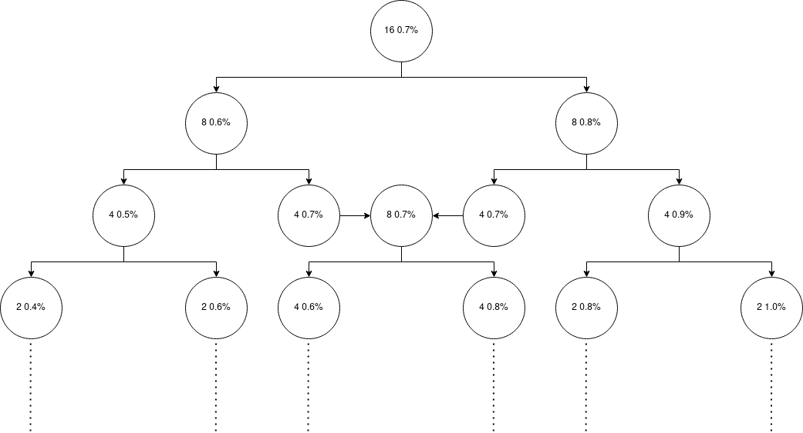

The uranium enriching process is a simple yet hard process. Farooq wants to reach 3.5% uranium and he has 0.7% uranium. To achieve this goal, he should feed uranium to centrifuge. For each 2 units of x% uranium which he feeds to centrifuge, he gets 1 unit of (x-0.1)% and 1 unit of (x+0.1)% uranium. For example 1 0.6% and 1 0.8% for 2 0.7%. 0.0% uranium will be discarded. Units are always positive integer and he cannot feed 1 unit of uranium.

Farooq needs to do this process till he reach 3.5% uranium. Now he needs your help answering these question(s):
Will be Farooq able to produce 3.5% uranium from m units of 0.7% uranium?
For m units of 0.7% uranium how many units of 3.5% uranium can he produce?
If with m units of 0.7% uranium Farooq cannot get 3.5% uranium, what can he produce?
You can solve these questions either by your math or your coding skills. Good luck :)